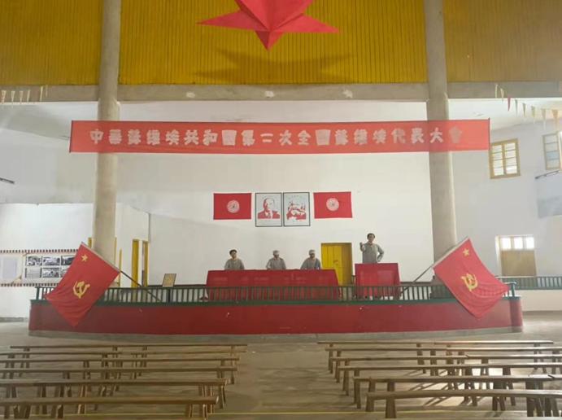

如果说岁月的风霜在这里孕育了枝繁叶茂的客家民系，为其穿上了灵动隽永的秀美外衣，那么，历史的机缘更赋予了瑞金独特不朽的红色灵魂！瑞金的每一寸土地，都见证过中国革命的激情与理想，浸染过革命先烈的热血与生命，演绎过时代的风流与沧桑，哪伯是几棵松柏，几条小道，也隐藏着许多动人的革命故事，照见出令人敬仰的革命情怀。1931年11月7日，瑞金叶坪，樟桂飘香。中华苏维埃共和国的“开国大典”——“一苏大会”在这里隆重开幕了。这是中国革命史上永远值得纪念的日子。因为，苏区的工农劳苦大众从此真正开始翻身做主人，参与国家政权的管理。在这面鲜艳的旗帜下，全中国劳苦大众的革命斗志无不受到极大的鼓舞，他们从中看到了新中国的曙光和希望。这也为长征的开始提供了政权基础和群众基础。